Expectation-Maximization Algorithm for NLP
Miranda Rintoul
Background
In statistics and its applications, maximum likelihood estimation (MLE) is a popular technique for estimating the
parameters of a distribution from observed data. The likelihood function on a parameter θ given data y is equivalent
to the probability density function of y with parameter θ.
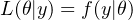
The maximum likelihood estimator of θ is the argmax of the likelihood function. Intuitively, it can be thought of as
the parameter that is most likely to have generated the data. In practice, it is conveneient to instead maximize the
log of the likelihood function, ℓ(θ|y).
However, there are many situations where the not all information is available, and our data has a
hidden (or latent) component. In this situation, finding the MLE of the parameters using only the
observed data can be difficult or even intractable. The Expectation-Maximizztion (E-M) algorithm,
introduced in 1977, is an iterative method for obtaining the MLE when there is latent or missing
data.
The E-M works by alternating between estimating the latent data and the parameters at each step. The data is
used to estimate the parameters, then the parameters are used to estimate the data, and so on until
convergence.
Let X be our observed data, Z be our latent data, and θ our parameter of interest. The E-M algorithm is as
follows:
- Initialize θ to some starting value(s).
- E-Step: At time t, estimate the values of the latent data Z based on the current value of θ. This gives
an expression to update θ based on the expected value of the log-likelihood with respect to the new
conditional distribution of Z given X.
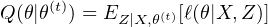
- M-Step: Find the most likely parameter(s) given the data from step 2. This is equivalent to maximizing
the quantity we defined before:
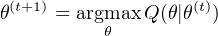
- Repeat steps 2 and 3 until convergence.
E-M and Hidden Markov Models
One of the most important applications of the E-M algorithm in NLP is the task of training a Hidden Markov
Model (HMM). An HMM is based on a structure called a Markov chain, which is a sequence of probabilistic events,
or states. A Markov chain obeys the Markov assumption, which states that the probability of a state
depends only on the previous state. Equivalently, only the current state can be used to predict the next
state.
An HMM is an extension of a Markov chain that assumes that all states in the chain are hidden. However, the states
emit observations with a certain probability. We cannot see any of the states, but we can see the observations. This
model lends itself particularly well to the NLP task of part-of-speech (POS) tagging. In this construction, words
would be observations, and POS tags would be states. Each POS tag would depend only on the previous
tag.
Formally, an HMM is defined as a set of five components:
- a set Q of N hidden states
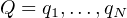
- an N × N transition probability matrix where aij is the probability of transitioning from state i to j
and ∑
jaij = 1 ∀i
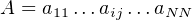
- a sequence V of M possible observations
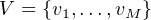
- an N × M matrix B of observation likelihoods where bij is the probability of state i generating
observation j and ∑
jbij = 1 ∀i
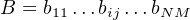
- an initial probability distribution π over states, where πi is the probability that the chain starts with
state i, and ∑
iπi = 1
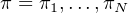
Given a set of possible states Q, a vocabulary V , and an unlabeled observation O, training an HMM requires
training both the transition probability matrix A and the obeservation matrix B. This is a daunting
task, but the E-M algorithm allows us to iteratively improve our estimates of these probabilities. The
forward-backward, or Baum-Welch algorithm is a specific instance of the E-M algorithm designed for this
purpose.
The Forward-Backward Algorithm
The E-step of the forward-backward algorithm makes use of forward probabilities and backward probabilities, which
are caculated from A, B, and a sequence of observations O of length T for a state i and a time t. Both are computed
recursively.
The forward probability αi(t) is the probability of seeing observations o1,o2,…,ot and being in state i at time
t:
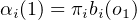
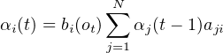
So, the forward probability of ot for state i is the observation probability of ot for state i times the sum of the
forward probabilities of the previous observation times the transition probability from j to i for all j
states.
The backward probability βi(t) is the probability of seeing the ending observations ot+1,…,oT given starting state i
at time T:
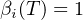
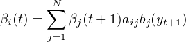
So, the backward probability of ot is the sum of the backward probability of the next state times the transiiton
probability from j to i times the observation probability of the next state for all j states.
The forward and backward probabilities, as well as the current estimates for A and B, allow us to calculate the final
two quantities needed for the E-step, γi(t) and ξij(t).
The quantity γi(t) is the probability of being in state i at time t given O, A, and B:
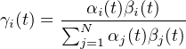
The quantity ξij(t) is the probability of being in state i at time t and being in state j at time t + 1 given O, A, and
B:
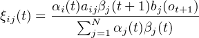
The denominators in both γi(t) and ξij(t) represent the probability of seeing the entire observation sequence
O.
We can now use these two quantities to update A and B (and π) in the M-step.
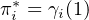
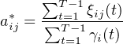
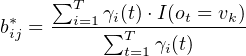
where I(ot = vk) is an indicator function that is 1 when ot = vk, and 0 otherwise. To summarize, the full algorithm
is:
- Initialize π,A, and B, either randomly or using prior information
- E-Step: Calculate forward and backward probabilities for all states using the entire training sequence.
Use these, as well as π,A, and B, to update γ and ξ.
- M-Step: Update π,A, and B using γ and ξ.
- Repeat steps 2 and 3 until convergence, e.g. the norms of the previous A and B are within ϵ of the
norms of the current A and B.
The forward-backward algorithm can be implemented in Python using numpy. I’ve also included the copy package
for convenience.
1import numpy 2from numpy import linalg as la 3import numpy.ma as ma 4from copy import copy
The first part of the algorithm is the forward and backward probabilities. It is most efficient to calculate all of the
forward and backward probabilities at once at each step.
1# Build forward probability matrix 2def forward_prob(A, B, pi, obs, tokens): 3 # Create matrix to hold probabilities for each state and time 4 N = len(A) 5 T = len(obs) 6 probs = numpy.zeros((N, T)) 7 # Initialize forward probability values for time 0 8 for i in range(N): 9 probs[i,0] = pi[i] 10 11 # Iteratively calculate all other forward probabilities 12 for t in range(T)[1:]: 13 # Get word at time t 14 word = obs[t] 15 word_loc = tokens.index(word) 16 for i in range(N): 17 obs_prob = B[i][word_loc] 18 transition_probs = [row[i] for row in A] 19 prev_forward_probs = probs[:,t-1] 20 21 probs[i,t] = obs_prob * sum(prev_forward_probs * transition_probs) 22 23 return probs 24 25 26# Build backward probability matrix 27def backward_prob(A, B, pi, obs, tokens): 28 # Create matrix to hold probabilities for each state and time 29 N = len(A) 30 T = len(obs) 31 probs = numpy.zeros((N, T)) 32 # Initialize forward probability values for time 0 33 probs[:,T-1] = 1 34 35 # Iteratively calculate all other backward probabilities 36 for t in reversed(range(T-1)): 37 next_word = obs[t+1] 38 next_word_loc = tokens.index(next_word) 39 for i in range(N): 40 transition_probs = [row[i] for row in A] 41 observation_probs = [row[next_word_loc] for row in B] 42 next_backward_probs = probs[:,t+1] 43 44 probs[i, t] = sum(next_backward_probs * transition_probs * observation_probs) 45 46 return probs
Next, we need functions to calculate ξ and γ for a given time, state(s), and forward/backward probabilities.
1# Probability of being in state i at time t 2def gamma(state, A, B, pi, time, forward_probs, backward_probs): 3 # Find probability of full observation sequence 4 full_obs = sum(forward_probs[:,time] * backward_probs[:,time]) 5 6 # Forward + backward probability of given state and time 7 forward = forward_probs[state,time] 8 backward = backward_probs[state,time] 9 10 return (forward * backward) / full_obs 11 12# Probability of being in states i, j at times t, t+1 13def xi(states, A, B, pi, time, forward_probs, backward_probs, obs, tokens): 14 # Find probability of full observation sequence 15 full_obs = sum(forward_probs[:,time] * backward_probs[:,time]) 16 17 # Probabilities of given states and times 18 forward = forward_probs[states[0],time] 19 transition = A[states[0]][states[1]] 20 backward = backward_probs[states[1],time] 21 22 next_word = obs[time+1] 23 next_word_loc = tokens.index(next_word) 24 observation = B[states[1]][next_word_loc] 25 26 return (forward * transition * backward * observation) / full_obs
Now we have all of the ingredients we need to implement the full forward-backward algorithm. Here, I’ve extended
the algorithm to allow for multiple training sequences O1,…OR. In the E-step, we need to calculate γ and ξ for all
observation sequences, and in the M-step, we simply need to average over all of the sequences when updating A,B,
and π.
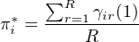
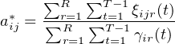
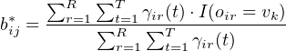
1# Full Baum-Welch (forward-backward) algorithm 2def forward_backward(A, B, pi, obs_seqs, tokens): 3 # Convergence criteria and max iterations 4 eps = .0001 5 A_diff = 1 6 B_diff = 1 7 maxit = 100 8 n_iter = 0 9 10 V = len(B[0]) # number of words in vocabulary 11 R = len(obs_seqs) # number of training sequences 12 N = len(A) # number of states 13 L = max([len(r) for r in obs_seqs]) # length of longest sequence 14 15 # Initialize arrays to hold all values of gamma and xi 16 gammas = numpy.zeros((R, N, L)) 17 xis = numpy.zeros((R, N, N, L-1)) 18 19 # Loop until both A and B have converged, or until max iter is hit 20 while ( (A_diff > eps) or (B_diff > eps) ) and (n_iter < maxit): 21 # E-step 22 for r in range(R): 23 obs = obs_seqs[r] # current observation 24 T = len(obs) # length of current observation 25 26 # Get forward/backward probability matrices 27 forward = forward_prob(A, B, pi, obs, tokens) 28 backward = backward_prob(A, B, pi, obs, tokens) 29 30 # Find gamma for each state, xi for each pair of states 31 for t in range(T): 32 for i in range(N): 33 gammas[r][i][t] = gamma(i, A, B, pi, t, forward, backward) 34 for t in range(T-1): 35 for i in range(N): 36 for j in range(N): 37 xis[r][i][j][t] = xi([i, j], A, B, pi, t, forward, backward, obs, tokens) 38 39 # M-step 40 # Store old matrices to compare 41 old_A = copy(A) 42 old_B = copy(B) 43 44 for i in range(N): 45 # Update pi 46 pi[i] = sum(gammas[:,i,1]) / R 47 48 for j in range(N): 49 # Update A 50 A[i, j] = sum(sum(xis[:,i,j,:])) / sum(sum(gammas[:,i,:-1])) 51 52 for v in range(V): 53 current_word = tokens[v] 54 obs_total = numpy.zeros((R)) 55 for r in range(R): 56 # Need to check if obs contains current vocab word 57 mask = [x != current_word for x in obs_seqs[r]] 58 mask += [True] * (L - len(obs_seqs[r])) 59 matches = ma.masked_array(gammas[r,i,:], mask=mask) 60 61 obs_total[r] = sum(matches) 62 63 # Update B 64 B[i, v] = sum(obs_total) / sum(sum(gammas[:,i,:])) 65 66 # Find differences in norm of A, B 67 A_diff = abs(la.norm(A) - la.norm(old_A)) 68 B_diff = abs(la.norm(B) - la.norm(old_B)) 69 n_iter += 1 70 71 return (pi, A, B)
The full code can be found here. In this example, I train an HMM on the Penn Treebank data from the nltk
package, which can be found found here (item 44).
Once an HMM is trained, it can be used to label, or decode, new testing sequences using methods like greedy
decoding or the Viterbi algorithm.